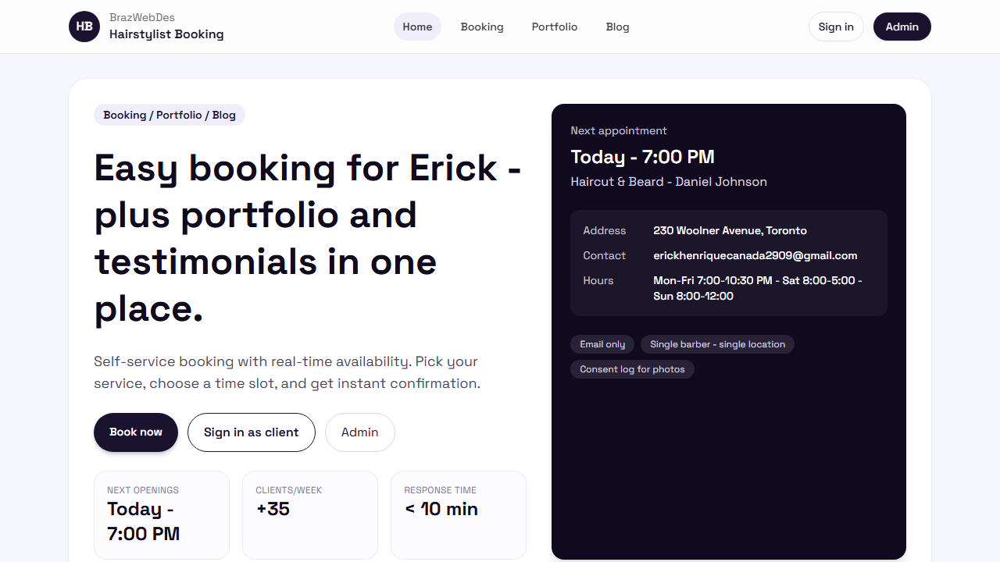

Current problem
The hairstylist was handling appointments through DMs and phone calls, which made scheduling slower and increased the chance of double-booking and no-shows.
Capstone
Capstone work completed with BrazWebDes to improve how a hairstylist manages bookings, client feedback, and digital presence across web and mobile.

Summary and Vision
The hairstylist was handling appointments through DMs and phone calls, which made scheduling slower and increased the chance of double-booking and no-shows.
The project introduces a booking system with available time slots, account-based booking, email updates, an admin dashboard, and a stronger digital presence through portfolio and testimonials.
The goal is a more professional client experience, less manual scheduling work for the hairstylist, and a cleaner way to present work, feedback, and future content.
Business Requirements
Requirements, Analysis, and Design
The project documents identify a hairstylist who needs fewer scheduling interruptions and a busy customer who wants quick online booking without calling.
The planned design work includes booking and admin views, branding, and prototype review. The mobile README also defines the app as a UI prototype and functional mockup before full integration.
The implemented web prototype shows the visual direction for the booking flow, the client-facing homepage, portfolio/testimonials, and admin entry points. This acts as the clearest mockup evidence included in the project folder.
System Implementation
The web client is built with Next.js and React. The implemented pages cover the public homepage, booking flow, signup/login, user dashboard, portfolio, blog, admin login, and admin dashboard.
The backend uses Python, Django, Django REST Framework, PostgreSQL, and JWT-based authentication. The API handles services, availability calculation, appointment booking, rescheduling, cancellations, and admin analytics.
The Android project includes booking, schedule, portfolio, blog, user, and admin screens. It is documented as a UI prototype that demonstrates the intended mobile flow and visual identity.
Capstone Navigation
The detailed capstone writeup stays on this page, while the projects page also includes the mobile capstone prototype in the wider project list.